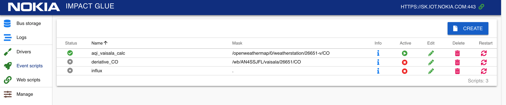
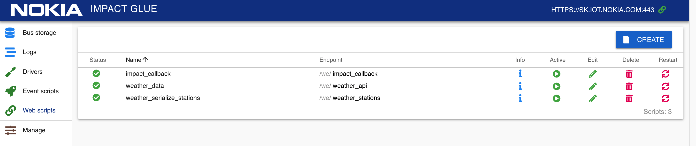
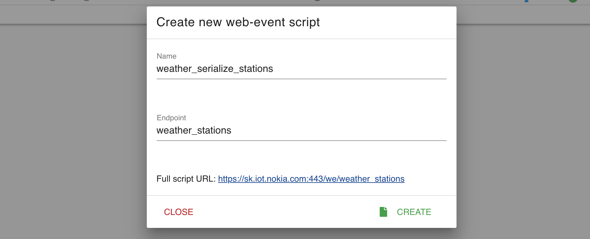
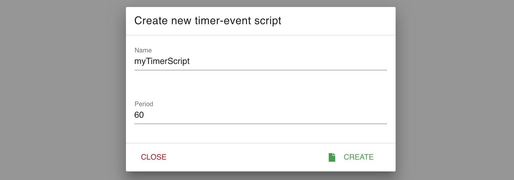
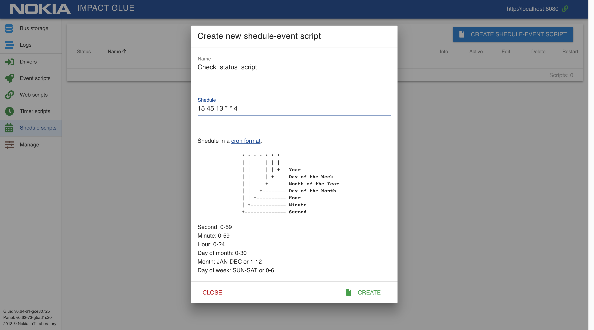

Документация разработчика
Общая информация
Внутренние переменные скрипта
_script_name - переменная, содержащая название текущего скрипта
_script_uuid - переменная, содержащая uuid (уникальный идентификатор) текущего скрипта
store - таблица для хранения временных данных, уникальная для каждого скрипта. Ее можно использовать просто как переменную:
store.value = 5
print(store.value) -- 5
main_store - таблица, в которой находятся хранилища всех запущенных с момента запуска системы скриптов.
Первый уровень таблицы — UUID скриптов. Второй уровень — store каждого скрипта. UUID скрипта можно узнать, нажав на значок "i" в интерфейсе. С помощью этой таблицы можно получать доступ к хранилищам других скриптов:
store.table = {1,2,3,4,5}
print(main_store["8d72fe2f-801e-48d1-ac1a-526f3e2622c0"].table) -- { 1, 2, 3, 4, 5 }
Например, это позволяет передавать между скриптами функции или таблицы, которые нельзя напрямую передать через BUS.
Функции для работы с логами
Функции log_info(), log_warning(), log_error(), log_user()
Добавляют в системный лог запись уровня "INFO", "WARNING", "ERROR" и "USER" соответственно.
Использование: log_info("Found correlation!"), log_warning("Found correlation!") , log_error("Found correlation!") , log_user("Found correlation!")
Ничего не возвращает.
Функции log() и print()
log() - алиас для функции log_user()
print() - алиас для функции log_user()
Функции для работы с центральной шиной
Функция set_value()
Обновляет топик "topic", устанавливая значение "value".
Использование: set_value(topic, value, check_flag, update_time)
Ничего не возвращает.
Параметр check_flag определяет, будет ли проверяться перед изменением значение изменяемого топика.
Если параметр check_flag равен "CHECK_VALUE", то функция проверит равенство передаваемого в нее значение и старого значения в топике, и если они равны — не будет обновлять топик(т.е. не будут запущены событийные скрипты, и не будет обновлено время обновления топика). Если параметр равен чему-то другому (или не передается вообще, т.е. равен nil), то проверки производиться не будет, и значение топика будет обновлено в любом случае.
Это поведение используется для случаев, когда функции могут вернуть значение, равное значению топика, и логика работы такова, что при этом нет необходимости активировать событийные скрипты.
Параметр update_time переопределяет время обновления топика. Если update_time не указано, используется текущее системное время. Формат update_time — unix-time в секундах текущего часового пояса, допускаются десятые, сотые и тысячные доли.
Это поведение используется, например, если в драйвере запрашиваются исторические данные через API и необходимо, чтобы в выгрузку в TSDB они ушли с временем из истории, а не с текущим. Тогда в BUS загружаются исторические данные, используя параметр update_time, и они с этим временем выгружаются в TSDB.
Обратите внимание, что поле Update time в bus storage в этом случае не будет соответствовать реальности — несмотря на то, что топик был обновлен только что, время обновления в интерфейсе будет равно переданному в set_value параметру update_time.
Примеры использования:
set_value("/test/device", "5")
set_value("/test/device", "5", nil, os.time()-60*60)
set_value("/test/device", "5", "CHECK_VALUE", os.time()-60*60*2)
Функция shadow_set_value()
Обновляет топик, устанавливая значение "value", но не запускает event-скрипты, которые подписаны на этот топик.
Использование: shadow_set_value(topic, value)
Ничего не возвращает.
Данные, поступающие из драйверов или скриптов, могут обновлять значение топика в стандартном (standard) или теневом (shadow) режиме. В первом случае, отработают все скрипты, которые подписаны на изменения значения топика, во втором случае, значение будет изменено без запуска скриптов. При обновлении самим скриптом топика, на который он подписан, коллбек в скрипте вызываться не будет.
Функция get_value()
Получает значение и метаинформацию топика.
Использование: local value, update_time, type, tags = get_value(topic)
Возвращает поля value, update_time, type, tags
Функция bus_serialize()
Получает содержимое центральной шины (bus) в виде вложенной таблицы.
Использование: local table = bus_serialize(pattern)
Возвращает таблицу. Если передана переменная "pattern", то будет выбрана только часть таблицы, соответствующая заданному шаблону. Шаблоны соответствуют правилам lua patterns
Вспомогательные функции
Функция round()
Функция для "правильного" математического округления с произвольной точностью.
Получает число и количество знаков после запятой, возвращает округленное число. Если количество знаков не указано, используется 2.
Использование: local round_value = round(value, rounds)
Примеры использования:
local value = 3.1415926535
print(round(value)) --> 3.14
print(round(value, 2)) --> 3.14
print(round(value, 3)) --> 3.142
Функция deepcopy()
Функция для копирования таблиц lua(если попытаться скопировать таблицу table_a = table_b, мы получим две ссылки на одну и ту же таблицу).
Получает таблицу, возвращает копию таблицу. Таблица не должна быть рекурсивной, иначе функция переполнит стек.
Использование: local copy_table = deepcopy(table)
Пример использования:
local old_table = {1, 2, 4}
local copy_table = deepcopy(old_table)
Встроенные библиотеки
Для использования этих библиотек не нужно делать require, они уже есть в области видимости каждого скрипта.
Библиотека HTTP Client
Библиотека, реализующая примитивы для http-запросов.
Уже созданный экземпляр доступен через объект http_client, т.е. для метода request() нужно вызвать http_client.request()
Пример использования:
local r = http_client:get('http://google.com')
print(r.body)
Библиотека MQTT
Библиотека, реализующая клиента протокола MQTT. Доступна через объект mqtt
Пример использования:
local mqtt_object = mqtt.new("client_id", true)
mqtt_object:connect({ host='127.0.0.1', port=1883 })
ok, err = mqtt_object:subscribe('my/topic/#', 1)
ok, err = mqtt_object:publish('my/topic/#', 'Some payload as string', mqtt.QOS_0, mqtt.RETAIN)
Библиотека JSON
Библиотека, конвертирующая таблицы lua в json и обратно. Доступна через объект json
Пример использования:
json.encode({abc = 234, cde = 345}) --> '{"cde":345,"abc":234}'
json.decode('[123, "hello"]') --> [123, 'hello']
Библиотека Socket
Библиотека для доступа к системным сокетам. Доступна через объект socket
Пример использования:
local sock_1 = socket('AF_INET', 'SOCK_DGRAM', 'udp')
local sock_2 = socket('AF_INET', 'SOCK_DGRAM', 'udp')
sock_1:bind('127.0.0.1')
sock_2:sendto('127.0.0.1', sock_1:name().port,'X')
message = sock_1:recvfrom()
print(message) --> X
Библиотека Fiber
Библиотека для работы с потоками. Доступна через объект fiber
Не стоит подключать библиотеку fiber вручную, т.е. делать "local fiber = require 'fiber'".
В этом случае, ошибки внутри тредов fiber не попадут в лог конкретного скрипта и не сгенерируют ошибку, что усложняет отладку.
В библиотеке доступны методы fiber.sleep(), fiber.create(), fiber.kill(), fiber.yield(), fiber.self(), fiber.status(). Для остальных нужно делать require и оборачивать функции, которые запускаются через fiber.create() в pcall()/xpcall().
Пример использования:
local function loop()
while true do
print("tick")
fiber.sleep(1.2) --seconds
end
end
fiber.create(loop)
Скрипты и драйвера
Drivers
Драйвера — это скрипты на Lua, которые реализуют тот или иной протокол(часто с привлечением сторонних библиотек) для связи с устройством, конвертируя данные приходящие с каждого устройства в единый формат. Они работают в качестве транслятора между "языком" устройства и общей шиной.
Примеры драйверов
Bus-event scripts
Этот тип скриптов выполняется для каждого устройства из группы устройств, определяемых маской, при обновлении их данных на центральной шине.

В теле скрипта должна присутствовать функция event_handler(), в которую будет передано значение измененного топика и его адрес:
function event_handler(value, topic)
print(value, topic) --> "5 /test/device"
end
Также, в теле скрипта, можно создать функции init() и destroy(), которые будут вызваны при инициализации скрипта и его выгрузке соответственно.
Это может быть полезно, например, если нужно сделать экспорт множества топиков по маске в MQTT.
У Bus-event скриптов существует возможность однократного запуска нажатием кнопки "Run Once" на странице редактиования скрипта или на странице со списком скриптов.
При однократном запуске, принудительно запускается event_handler() c аргументами value=0, topic="once". Не выполняются init() и destroy().
Однократный запуск полезен для отладки и совершения разовых действий.
Web-event scripts
Скрипты, выполняемые при обращении к выбранному URL ("endpoint") с помощью HTTP запроса.

Функция, реализующая непосредственную логику при обработке запроса — http_callback().
При создании web-event скрипта, необходимо дать ему название и указать endpoint.
Полный адрес скрипта формируется как адрес_сервера:порт + /we/ + endpoint и отображается в нижней части модального окна как "Full script URL".

В скриптах доступны переменные, содержащие данные запроса:
params- массив с параметрами запросаreq- объект запроса HTTP сервера Tarantool
function http_callback(params, req)
return {data=params}
end
Если в функции http_callback() вернуть одно значение-таблицу (напр. return table), то она будет сериализована в JSON и в таком виде отдана клиенту http-сервера.
Если необходимо управлять возвращаемыми данными напрямую, то надо вернуть 2 значения (напр. return nil, 'OK'), тогда первое значение будет отброшено, а второе - выдано клиенту в "сыром" виде без сериализации. Для дополнительных сведений смотрите документацию HTTP сервера Tarantool
Timer-event scripts
Скрипты, выполняемые с определенным интервалом (указывается в секундах).

Для создания скрипта, укажите его название и желаемый интервал его выполнения в секундах.
Код скрипта должен находиться внутри функции event_handler().
function event_handler()
print("Timer event start")
end
Schedule scripts
Скрипты, выполняемые по заданному расписанию.

Для создания скрипта, укажите его название и расписание в формате crontab.
Формат отличается от стандартного необходимостью указания секунд в интервале (первый символ). Если вам не нужны секунды, укажите в первом символе "0". Не указываете там "*", иначе скрипт будет запускаться каждую секунду в подходящих интервалах.
┌───────────── секунды (0 - 59)
│ ┌───────────── минуты (0 - 59)
│ │ ┌───────────── часы (0 - 23)
│ │ │ ┌───────────── дни месяца (1 - 31)
│ │ │ │ ┌───────────── месяца (JAN-DEC или 1 - 12)
│ │ │ │ │ ┌───────────── день недели (SUN-SAT или 0 - 6) (с воскресения до субботы)
│ │ │ │ │ │
│ │ │ │ │ │
* * * * * *
К примеру, с такими настройками расписания, скрипт будет запускаться по четвергам в 13:45:15
15 45 13 * * 4
Код скрипта должен находиться внутри функции event_handler().
function event_handler()
print("Shedule event start")
end